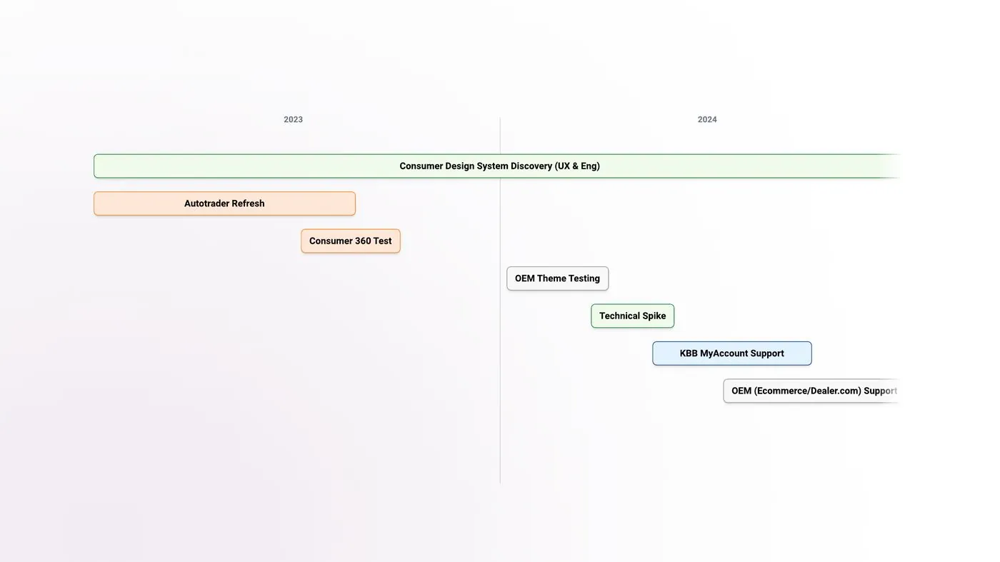
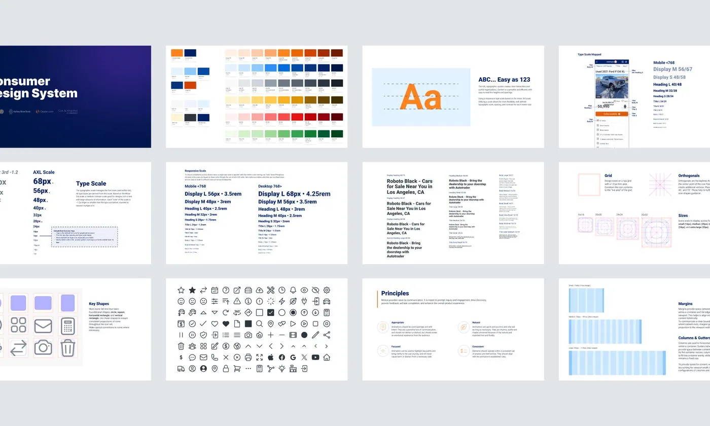
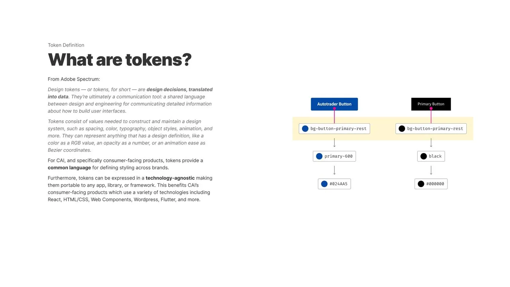
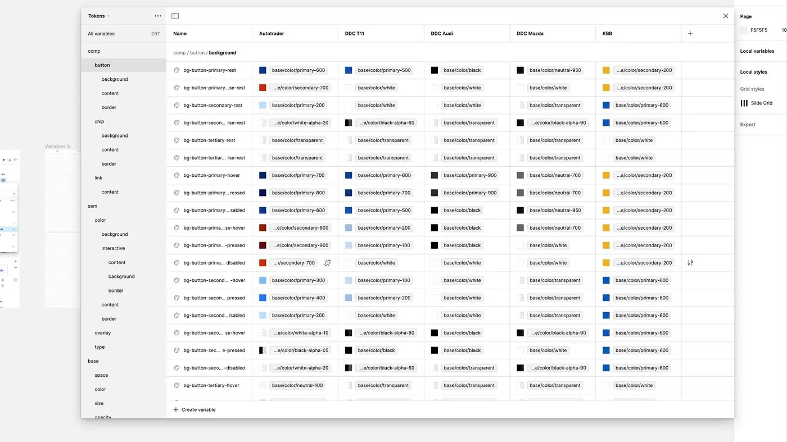
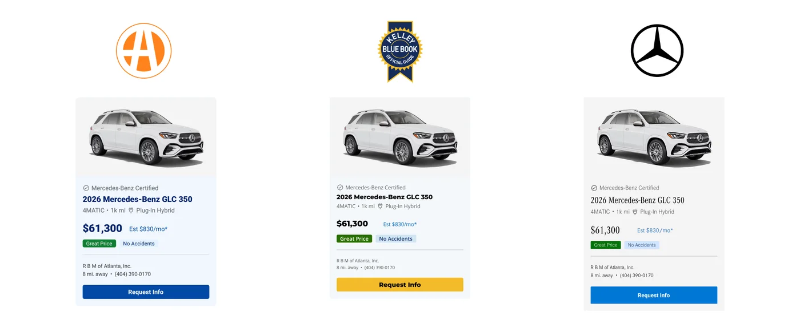
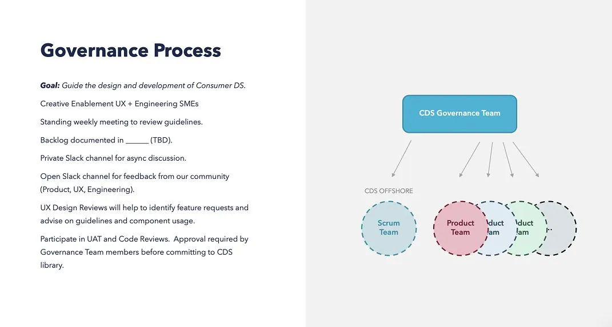
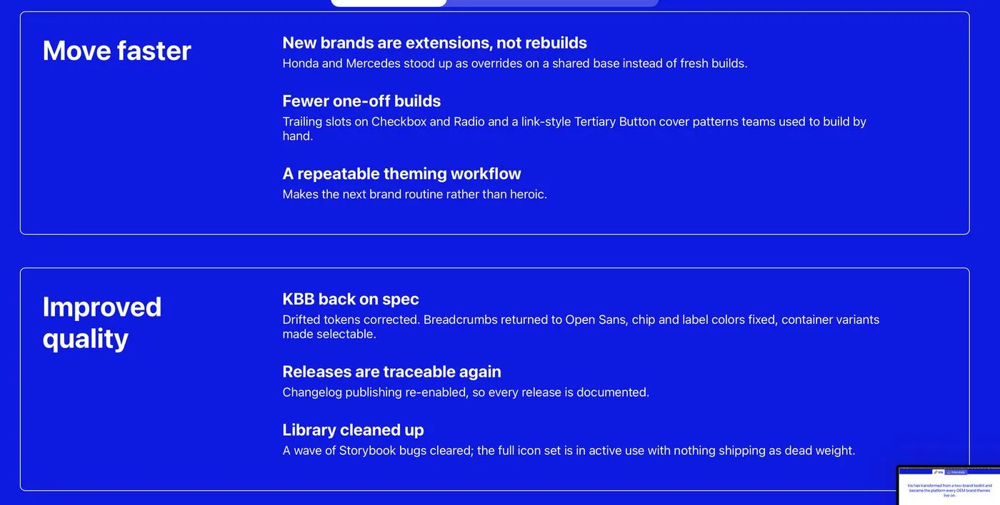
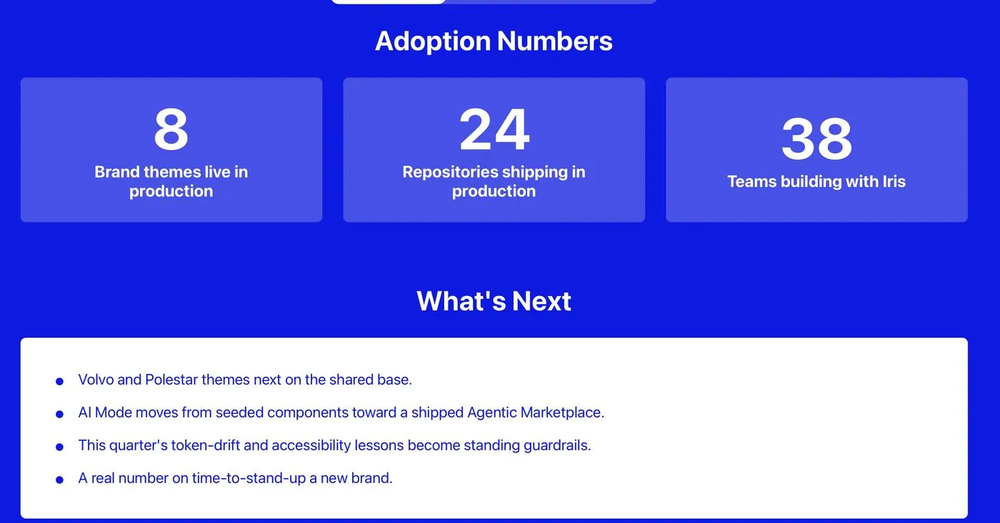

- The same button rebuilt five different ways across brands
- No shared vocabulary for what a “primary” action even looked like
- OEM dealer sites styled entirely by hand, with no path to consistency
Iris Design System

Iris is Cox Automotive's consumer design system, powering Autotrader, Kelley Blue Book, and OEM dealer sites including Audi and Mazda. What started as a two-brand toolkit is now the shared platform every brand theme runs on.
The Problem
Through 2023, Cox Automotive's consumer products had no shared design language. Autotrader, KBB, and our OEM dealer sites each built the same components differently, with no common source of truth between design and engineering.
Challenges
01
Multi-brand
A system flexible enough to hold Autotrader's bold orange alongside Audi's black and white restraint, without forking the codebase per brand.
02
Cross-team
Design, engineering, and an offshore delivery team all needed a real seat at the table.
03
Extensible
OEM dealer sites were already on the roadmap. The system had to support brands not yet onboarded.
Foundations
I worked alongside two other designers and our manager on the design-foundations team. We started with the foundation itself: full color palette, typography scale, motion design, and accessibility standards, before a single component got built. That order mattered. Everything downstream, every button, every card, every token, had to sit on top of decisions that were already settled.
From there, I helped build out the component library in Figma and worked directly with engineering to get each one into code. A token is a design decision turned into data, a name like bg-button-primary-rest that means the same thing everywhere but resolves differently by brand. On Autotrader, it points to a deep blue. On Audi, it points to black.

Core foundations: type scale, color palette, and key shapes underneath every Iris component.

Same semantic token, bg-button-primary-rest, resolves to a different value per brand.
Proof of concept
I proved the token model out through an Autotrader refresh first, before asking other brands to build on it.

The token system as it lives in Figma, one row per component property, one column per brand.
Expansion
I scoped how the system would extend past its original two brands. Autotrader and KBB got the full component set. OEM dealer sites got a reduced set that matched how those sites actually used the system.

Autotrader, Kelley Blue Book, a global default, Audi, and Mazda, each scoped to the components that brand tier needs.
Governance
I joined the governance team as Iris extended past its original two brands, helping define how changes would be reviewed as more brand themes came online.

How a component moves from proposal to production across design and engineering.
Outcomes
8
Brand themes live in production
38
Teams building with Iris
24
Repositories shipping in production
585K+
Component instances across 722 Figma files
When Honda and Mercedes needed themes, they stood up as overrides on the shared base instead of ground-up builds, proof that the original scoping held. Weekly Figma data shows sustained use rather than a launch spike, with thousands of net new component insertions most weeks since mid-2025.


What's next
- Volvo and Polestar themes on the same shared base
- AI Mode moving toward a shipped Agentic Marketplace
- This quarter's lessons on token drift and accessibility becoming standing guardrails
Ongoing
Iris isn't a one time build, it's something I keep running. I still serve on the governance team, reviewing changes and keeping every brand theme consistent as new ones join. I host a biweekly open office hours session where any designer or developer can drop in with a question, which component to use for a given case, or a request for something the system doesn't support yet. I also wrote the onboarding documentation new designers use to ramp up on Iris, covering the token model, component conventions, and how to raise a request through governance.
Governance
I continue to serve on the governance team, reviewing every major change and keeping brand themes consistent as the system grows.
Office hours
I run biweekly open office hours for any designer or developer with a question on Iris, from component selection to new functionality requests.
Onboarding
I wrote the onboarding documentation new designers use to get up to speed on Iris, from token basics to how to request changes.